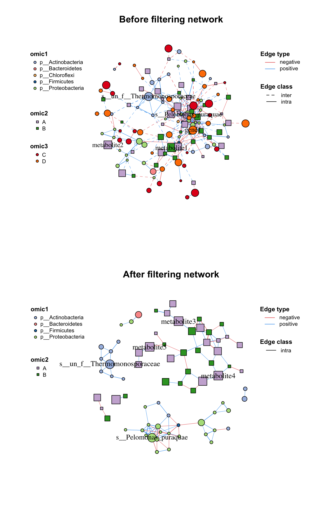
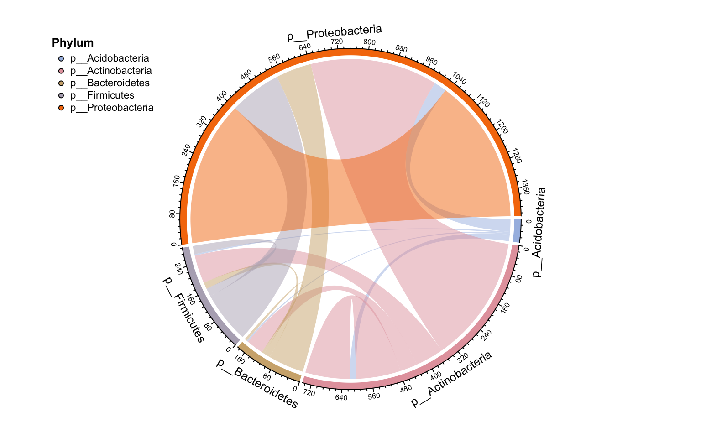
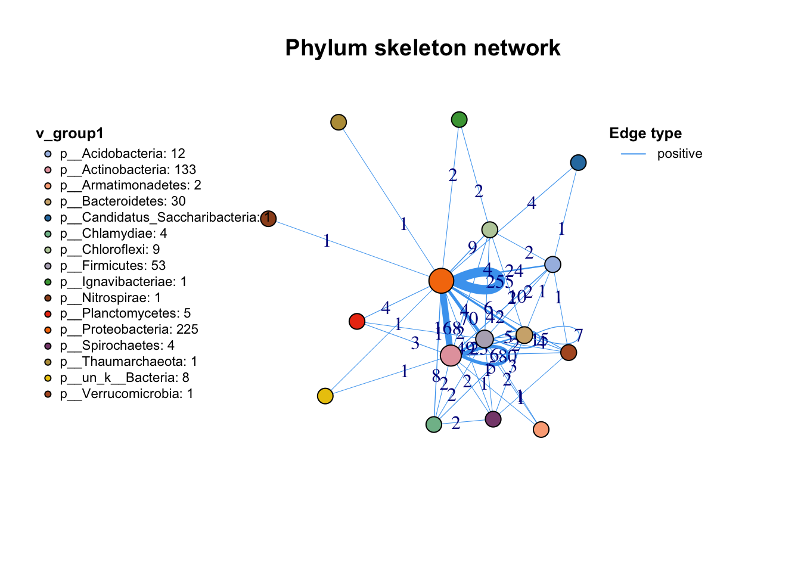
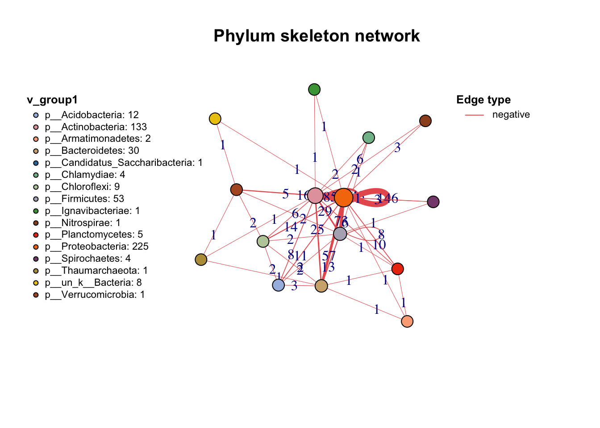

3 Manipulation
After we build a network, we can see the class of our network is metanet, which is a derived object from igraph. So all functions used for igraph can also use on our network.
data(otutab,package = "pcutils")
t(otutab) -> totu
c_net_cal(totu,method = "spearman", filename =F, p.adjust.method = NULL) -> corr
c_net_build(corr,r_thres = 0.6,p_thres = 0.05,del_single = T) -> co_net
class(co_net)
#> [1] "metanet" "igraph"Besides, there are some other functions for us to manipulate the metanet easily.
3.1 Attributes
We could get the attributes of whole network, each vertex and each edge by get_*() as dataframe:
#get network attributes
get_n(co_net)
#> n_type
#> 1 single
#get vertex attributes
get_v(co_net)%>%head(5)
#> name v_group v_class size
#> 1 s__un_f__Thermomonosporaceae v_group1 v_class1 4
#> 2 s__Pelomonas_puraquae v_group1 v_class1 4
#> 3 s__Rhizobacter_bergeniae v_group1 v_class1 4
#> 4 s__Flavobacterium_terrae v_group1 v_class1 4
#> 5 s__un_g__Rhizobacter v_group1 v_class1 4
#> label shape color
#> 1 s__un_f__Thermomonosporaceae circle #a6bce3
#> 2 s__Pelomonas_puraquae circle #a6bce3
#> 3 s__Rhizobacter_bergeniae circle #a6bce3
#> 4 s__Flavobacterium_terrae circle #a6bce3
#> 5 s__un_g__Rhizobacter circle #a6bce3
#get edge attributes
get_e(co_net)%>%head(5)
#> id from
#> 1 1 s__un_f__Thermomonosporaceae
#> 2 2 s__un_f__Thermomonosporaceae
#> 3 3 s__un_f__Thermomonosporaceae
#> 4 4 s__un_f__Thermomonosporaceae
#> 5 5 s__un_f__Thermomonosporaceae
#> to weight cor
#> 1 s__Actinocorallia_herbida 0.6759546 0.6759546
#> 2 s__Kribbella_catacumbae 0.6742386 0.6742386
#> 3 s__Kineosporia_rhamnosa 0.7378741 0.7378741
#> 4 s__un_f__Micromonosporaceae 0.6236449 0.6236449
#> 5 s__Flavobacterium_saliperosum 0.6045747 0.6045747
#> e_type width v_group_from v_group_to e_class
#> 1 positive 0.6759546 v_group1 v_group1 intra
#> 2 positive 0.6742386 v_group1 v_group1 intra
#> 3 positive 0.7378741 v_group1 v_group1 intra
#> 4 positive 0.6236449 v_group1 v_group1 intra
#> 5 positive 0.6045747 v_group1 v_group1 intra
#> color lty
#> 1 #48A4F0 1
#> 2 #48A4F0 1
#> 3 #48A4F0 1
#> 4 #48A4F0 1
#> 5 #48A4F0 1And we can see, some attributes have been set when we build the network like v_group, these are internal attributes of metanet and are related to the following analysis and visualization.
| Attribute name | Description |
|---|---|
| v_group | the big group for network, usually one omics data produces one group. Related to the vertex shape. |
| v_class | some annotation of vertex, maybe classification or network modules. Related to the vertex color. |
| size | numeric variable assign to the vertex size. |
| label | assign to the vertex label, replace to NA to hide some labels you don’t want to display. |
| e_type | the type of edges, often be the positive or negative according to correlation. Related to the edge color. |
| width | numeric variable assign to the edge width. |
| e_class | the second type of edges, often be the intra or inter according to two vertex group. Related to the edge line type. |
We will talk about how to set these attributes by ourselves for some specific analysis later.
3.2 Annotation
Sometimes we have lots of annotation tables need to add to the network, such as abundance table, taxonomy table and so on,
we can use anno_vertex() and anno_edge() to do this.
The annotation dataframe needs have rowname or a “name” column, anno_vertex() will automatically match the vertex name and combine the table.
anno_vertex(co_net, taxonomy)->co_net1
get_v(co_net1)%>%head(5)
#> name v_group v_class size
#> 1 s__un_f__Thermomonosporaceae v_group1 v_class1 4
#> 2 s__Pelomonas_puraquae v_group1 v_class1 4
#> 3 s__Rhizobacter_bergeniae v_group1 v_class1 4
#> 4 s__Flavobacterium_terrae v_group1 v_class1 4
#> 5 s__un_g__Rhizobacter v_group1 v_class1 4
#> label shape color Kingdom
#> 1 s__un_f__Thermomonosporaceae circle #a6bce3 k__Bacteria
#> 2 s__Pelomonas_puraquae circle #a6bce3 k__Bacteria
#> 3 s__Rhizobacter_bergeniae circle #a6bce3 k__Bacteria
#> 4 s__Flavobacterium_terrae circle #a6bce3 k__Bacteria
#> 5 s__un_g__Rhizobacter circle #a6bce3 k__Bacteria
#> Phylum Class
#> 1 p__Actinobacteria c__Actinobacteria
#> 2 p__Proteobacteria c__Betaproteobacteria
#> 3 p__Proteobacteria c__Gammaproteobacteria
#> 4 p__Bacteroidetes c__Flavobacteriia
#> 5 p__Proteobacteria c__Gammaproteobacteria
#> Order Family
#> 1 o__Actinomycetales f__Thermomonosporaceae
#> 2 o__Burkholderiales f__Comamonadaceae
#> 3 o__Pseudomonadales f__Pseudomonadaceae
#> 4 o__Flavobacteriales f__Flavobacteriaceae
#> 5 o__Pseudomonadales f__Pseudomonadaceae
#> Genus Species
#> 1 g__un_f__Thermomonosporaceae s__un_f__Thermomonosporaceae
#> 2 g__Pelomonas s__Pelomonas_puraquae
#> 3 g__Rhizobacter s__Rhizobacter_bergeniae
#> 4 g__Flavobacterium s__Flavobacterium_terrae
#> 5 g__Rhizobacter s__un_g__Rhizobacteranno_edge() receives the same format annotation dataframe with anno_vertex(), it will automatically match the “from” and “to” columns so that you can summary the links.
anno_edge(co_net, select(taxonomy,"Phylum"))->co_net1
get_e(co_net1)%>%head(5)
#> id from
#> 1 1 s__un_f__Thermomonosporaceae
#> 2 2 s__un_f__Thermomonosporaceae
#> 3 3 s__un_f__Thermomonosporaceae
#> 4 4 s__un_f__Thermomonosporaceae
#> 5 5 s__un_f__Thermomonosporaceae
#> to weight cor
#> 1 s__Actinocorallia_herbida 0.6759546 0.6759546
#> 2 s__Kribbella_catacumbae 0.6742386 0.6742386
#> 3 s__Kineosporia_rhamnosa 0.7378741 0.7378741
#> 4 s__un_f__Micromonosporaceae 0.6236449 0.6236449
#> 5 s__Flavobacterium_saliperosum 0.6045747 0.6045747
#> e_type width v_group_from v_group_to e_class
#> 1 positive 0.6759546 v_group1 v_group1 intra
#> 2 positive 0.6742386 v_group1 v_group1 intra
#> 3 positive 0.7378741 v_group1 v_group1 intra
#> 4 positive 0.6236449 v_group1 v_group1 intra
#> 5 positive 0.6045747 v_group1 v_group1 intra
#> color lty Phylum_from Phylum_to
#> 1 #48A4F0 1 p__Actinobacteria p__Actinobacteria
#> 2 #48A4F0 1 p__Actinobacteria p__Actinobacteria
#> 3 #48A4F0 1 p__Actinobacteria p__Actinobacteria
#> 4 #48A4F0 1 p__Actinobacteria p__Actinobacteria
#> 5 #48A4F0 1 p__Actinobacteria p__BacteroidetesMetaNet provides a function c_net_set() for easily annotation if you have more than one table (it’s normal when you do a multi-omics analysis).
Abundance_df=data.frame("Abundance"=colSums(totu))
co_net1<-c_net_set(co_net,taxonomy,Abundance_df)
get_v(co_net1)%>%head(5)
#> name v_group v_class size
#> 1 s__un_f__Thermomonosporaceae v_group1 v_class1 4
#> 2 s__Pelomonas_puraquae v_group1 v_class1 4
#> 3 s__Rhizobacter_bergeniae v_group1 v_class1 4
#> 4 s__Flavobacterium_terrae v_group1 v_class1 4
#> 5 s__un_g__Rhizobacter v_group1 v_class1 4
#> label shape color Kingdom
#> 1 s__un_f__Thermomonosporaceae circle #a6bce3 k__Bacteria
#> 2 s__Pelomonas_puraquae circle #a6bce3 k__Bacteria
#> 3 s__Rhizobacter_bergeniae circle #a6bce3 k__Bacteria
#> 4 s__Flavobacterium_terrae circle #a6bce3 k__Bacteria
#> 5 s__un_g__Rhizobacter circle #a6bce3 k__Bacteria
#> Phylum Class
#> 1 p__Actinobacteria c__Actinobacteria
#> 2 p__Proteobacteria c__Betaproteobacteria
#> 3 p__Proteobacteria c__Gammaproteobacteria
#> 4 p__Bacteroidetes c__Flavobacteriia
#> 5 p__Proteobacteria c__Gammaproteobacteria
#> Order Family
#> 1 o__Actinomycetales f__Thermomonosporaceae
#> 2 o__Burkholderiales f__Comamonadaceae
#> 3 o__Pseudomonadales f__Pseudomonadaceae
#> 4 o__Flavobacteriales f__Flavobacteriaceae
#> 5 o__Pseudomonadales f__Pseudomonadaceae
#> Genus Species
#> 1 g__un_f__Thermomonosporaceae s__un_f__Thermomonosporaceae
#> 2 g__Pelomonas s__Pelomonas_puraquae
#> 3 g__Rhizobacter s__Rhizobacter_bergeniae
#> 4 g__Flavobacterium s__Flavobacterium_terrae
#> 5 g__Rhizobacter s__un_g__Rhizobacter
#> Abundance
#> 1 26147
#> 2 25217
#> 3 16592
#> 4 16484
#> 5 13895If you have a vector and you absolutely know it matches the vertex name of network, you can use igraph method to annotate (Don’t recommend), same as the edge annotate vector:
co_net1=co_net
#add vertex attribute
V(co_net1)$new_attri=seq_len(length(co_net1))
get_v(co_net1)%>%head(5)
#> name v_group v_class size
#> 1 s__un_f__Thermomonosporaceae v_group1 v_class1 4
#> 2 s__Pelomonas_puraquae v_group1 v_class1 4
#> 3 s__Rhizobacter_bergeniae v_group1 v_class1 4
#> 4 s__Flavobacterium_terrae v_group1 v_class1 4
#> 5 s__un_g__Rhizobacter v_group1 v_class1 4
#> label shape color new_attri
#> 1 s__un_f__Thermomonosporaceae circle #a6bce3 1
#> 2 s__Pelomonas_puraquae circle #a6bce3 2
#> 3 s__Rhizobacter_bergeniae circle #a6bce3 3
#> 4 s__Flavobacterium_terrae circle #a6bce3 4
#> 5 s__un_g__Rhizobacter circle #a6bce3 5
#add edge attribute
E(co_net1)$new_attri="new attribute"
get_e(co_net1)%>%head(5)
#> id from
#> 1 1 s__un_f__Thermomonosporaceae
#> 2 2 s__un_f__Thermomonosporaceae
#> 3 3 s__un_f__Thermomonosporaceae
#> 4 4 s__un_f__Thermomonosporaceae
#> 5 5 s__un_f__Thermomonosporaceae
#> to weight cor
#> 1 s__Actinocorallia_herbida 0.6759546 0.6759546
#> 2 s__Kribbella_catacumbae 0.6742386 0.6742386
#> 3 s__Kineosporia_rhamnosa 0.7378741 0.7378741
#> 4 s__un_f__Micromonosporaceae 0.6236449 0.6236449
#> 5 s__Flavobacterium_saliperosum 0.6045747 0.6045747
#> e_type width v_group_from v_group_to e_class
#> 1 positive 0.6759546 v_group1 v_group1 intra
#> 2 positive 0.6742386 v_group1 v_group1 intra
#> 3 positive 0.7378741 v_group1 v_group1 intra
#> 4 positive 0.6236449 v_group1 v_group1 intra
#> 5 positive 0.6045747 v_group1 v_group1 intra
#> color lty new_attri
#> 1 #48A4F0 1 new attribute
#> 2 #48A4F0 1 new attribute
#> 3 #48A4F0 1 new attribute
#> 4 #48A4F0 1 new attribute
#> 5 #48A4F0 1 new attribute3.3 Filter (Sub-net)
After setting your network properly, you may need to analysis part of the whole network (especially in the multi-omics analysis),
c_net_filter() can get the sub-net conveniently (Figure 3.1), you can put lots of filter conditions in:
data("multi_net",package = "MetaNet")
multi2=c_net_filter(multi1,v_group%in%c("omic1","omic2"))%>%c_net_filter(.,e_class=="intra",mode = "e")
par(mfrow=c(2,1))
plot(multi1,lty_legend=T,main="Before filtering network")#before filter
plot(multi2,lty_legend=T,main="After filtering network") #after filter
Figure 3.1: From a whole network filter a sub-net.
3.4 Skeleton
If you want to summary the edges source and target according to one group, summ_2col is a easy way to get this information. direct = F argument means this is a undirected relationship, so “a-b” and “b-a” will summary to one type edge.
anno_edge(co_net, select(taxonomy,"Phylum"))->co_net1
df=get_e(co_net1)[,c("Phylum_from","Phylum_to")]
summ_2col(df,direct = F)%>%arrange(-count)->Phylum_from_to
kbl(Phylum_from_to,caption = "Summary of edges according to Phylum") %>%
kable_paper() %>%
scroll_box(width = "100%", height = "400px")| Phylum_from | Phylum_to | count |
|---|---|---|
| p__Proteobacteria | p__Proteobacteria | 401 |
| p__Actinobacteria | p__Proteobacteria | 353 |
| p__Firmicutes | p__Proteobacteria | 143 |
| p__Actinobacteria | p__Actinobacteria | 123 |
| p__Bacteroidetes | p__Proteobacteria | 99 |
| p__Actinobacteria | p__Firmicutes | 78 |
| p__Actinobacteria | p__Bacteroidetes | 48 |
| p__Acidobacteria | p__Proteobacteria | 35 |
| p__Chloroflexi | p__Proteobacteria | 23 |
| p__Firmicutes | p__Firmicutes | 23 |
| p__Proteobacteria | p__Verrucomicrobia | 22 |
| p__Acidobacteria | p__Actinobacteria | 18 |
| p__Bacteroidetes | p__Firmicutes | 18 |
| p__Chlamydiae | p__Proteobacteria | 14 |
| p__Planctomycetes | p__Proteobacteria | 14 |
| p__Actinobacteria | p__Verrucomicrobia | 11 |
| p__Actinobacteria | p__Chloroflexi | 10 |
| p__Actinobacteria | p__Planctomycetes | 9 |
| p__Bacteroidetes | p__Bacteroidetes | 7 |
| p__Chloroflexi | p__Firmicutes | 6 |
| p__Bacteroidetes | p__Chlamydiae | 5 |
| p__Proteobacteria | p__Spirochaetes | 5 |
| p__Acidobacteria | p__Bacteroidetes | 4 |
| p__Acidobacteria | p__Chloroflexi | 4 |
| p__Acidobacteria | p__Firmicutes | 4 |
| p__Actinobacteria | p__Chlamydiae | 4 |
| p__Bacteroidetes | p__Chloroflexi | 4 |
| p__Bacteroidetes | p__Verrucomicrobia | 4 |
| p__Candidatus_Saccharibacteria | p__Proteobacteria | 4 |
| p__Firmicutes | p__Verrucomicrobia | 4 |
| p__Nitrospirae | p__Proteobacteria | 4 |
| p__Actinobacteria | p__Spirochaetes | 3 |
| p__Armatimonadetes | p__Proteobacteria | 3 |
| p__Bacteroidetes | p__Spirochaetes | 3 |
| p__Chlamydiae | p__Firmicutes | 3 |
| p__Ignavibacteriae | p__Proteobacteria | 3 |
| p__Actinobacteria | p__Nitrospirae | 2 |
| p__Chlamydiae | p__Spirochaetes | 2 |
| p__Chloroflexi | p__Ignavibacteriae | 2 |
| p__Chloroflexi | p__Verrucomicrobia | 2 |
| p__Firmicutes | p__Planctomycetes | 2 |
| p__Firmicutes | p__Spirochaetes | 2 |
| p__Proteobacteria | p__un_k__Bacteria | 2 |
| p__Acidobacteria | p__Candidatus_Saccharibacteria | 1 |
| p__Acidobacteria | p__Verrucomicrobia | 1 |
| p__Actinobacteria | p__Armatimonadetes | 1 |
| p__Actinobacteria | p__Ignavibacteriae | 1 |
| p__Actinobacteria | p__Thaumarchaeota | 1 |
| p__Actinobacteria | p__un_k__Bacteria | 1 |
| p__Armatimonadetes | p__Bacteroidetes | 1 |
| p__Armatimonadetes | p__Firmicutes | 1 |
| p__Armatimonadetes | p__Planctomycetes | 1 |
| p__Bacteroidetes | p__Planctomycetes | 1 |
| p__Bacteroidetes | p__Thaumarchaeota | 1 |
| p__Proteobacteria | p__Thaumarchaeota | 1 |
| p__Spirochaetes | p__Verrucomicrobia | 1 |
| p__Thaumarchaeota | p__Verrucomicrobia | 1 |
| p__un_k__Bacteria | p__Verrucomicrobia | 1 |
Then you can use sankey plot to display the links.
pcutils::my_sankey(Phylum_from_to,dragY =T,fontSize = 10,width=600,numberFormat = ",.4")Figure 3.2: Sankey plot display edges according to Phylum
Or use the circlize plot to display. link_stat() have more arguments than summ_2col() for summary edges.
anno_vertex(co_net, select(taxonomy,"Phylum"))->co_net1
links_stat(co_net1,topN = 5,group = "Phylum",inter = "all")
Figure 3.3: Circlize plot display edges according to Phylum
Other important action for a network is extracting the skeleton according to one group, which I call get skeleton plot.
get_group_skeleton() can annotate all nodes with a group then combine each group nodes as a big node,
and calculate new links between all groups. This plot shows the flows between different groups clearly.
By the way, the result will display by different edge types, if you just want summary all edges, set the e_type as one same character (use c_net_set() as 4.1.1).
get_group_skeleton(co_net1,Group = "Phylum")->ske_net
plot(ske_net,vertex.label=NA,legend_position=c(left_leg_x=-2.5))
Figure 3.4: Skeleton plot according to the Phylum.

Figure 3.5: Skeleton plot according to the Phylum.
3.5 Export
MetaNet also support to export various format network files (dataframe, graphml,…) for following analysis in other softwares (Cytoscape, Gephi…).
c_net_save(co_net,filename = "My_net",format = "data.frame")
c_net_save(co_net,filename = "My_net",format = "graphml")